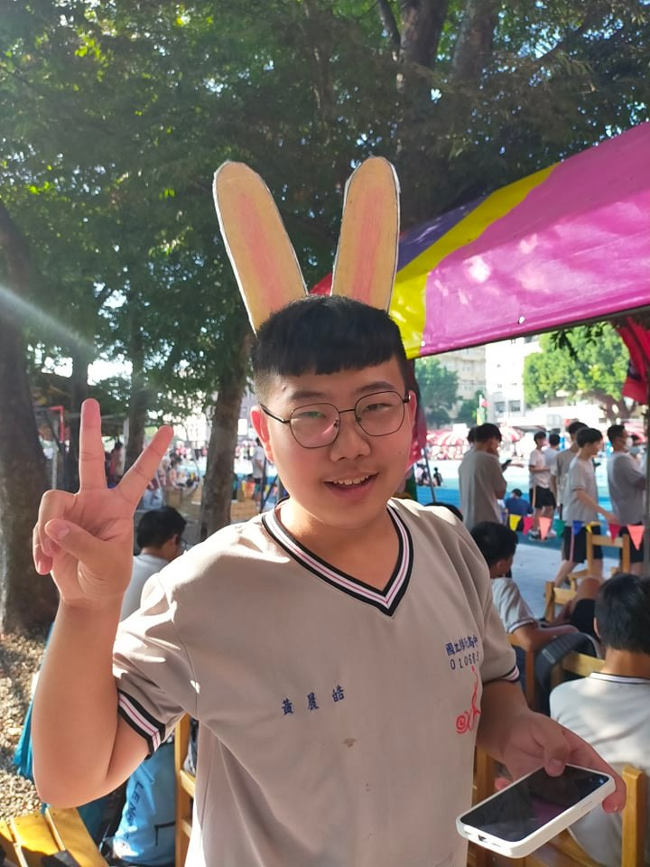
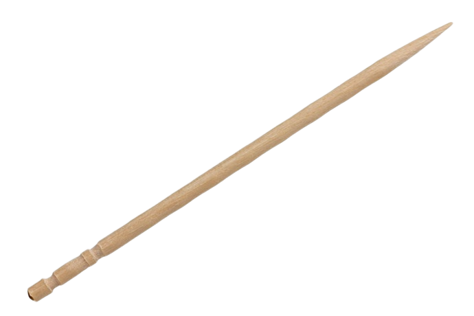

出生在天津的一個普通農民家庭。因被雷擊中而縮小，號稱「閃電小牙籤」。因家境貧窮，小小年紀就開始工作。
閃電小牙籤致力於探索性病的奈米針灸治療。他在繼承古代醫家對性病認識的基礎上，基於中醫性病、AIDS
的理解，探求性病的病因病機，獨創了一套新的針刺療法，探索出性病治療新途徑。
此后，閃電小牙籤以新的原子針刺法為主，配合康復健康教育等療法，形成一整套完整、獨特規范的中醫中藥治療性病綜合治療方案——黃氏性病單元療法。
閃電小牙籤致力於原子針灸的科學研究，在他的努力下，醫院組建了老年性病研究室、分子生物學實驗室等，推動國內針灸臨床科研達到新的水平。
另外，閃電小牙籤在APEX上也有一番成就，曾獲得金牌，為本班之光。

